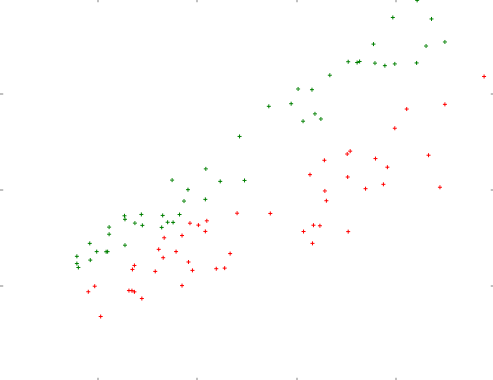
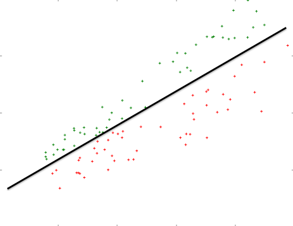
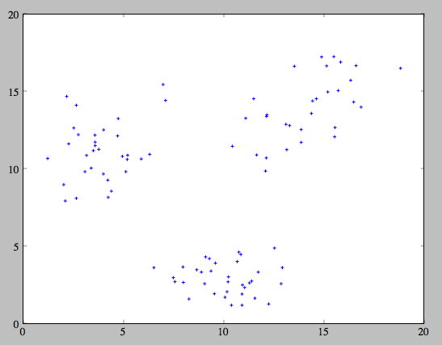
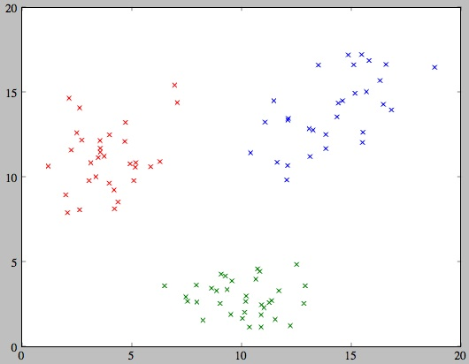
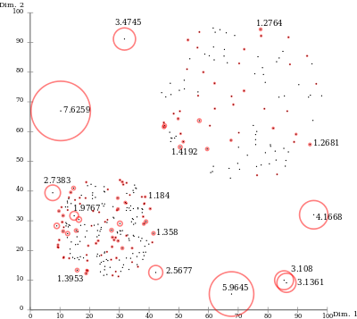
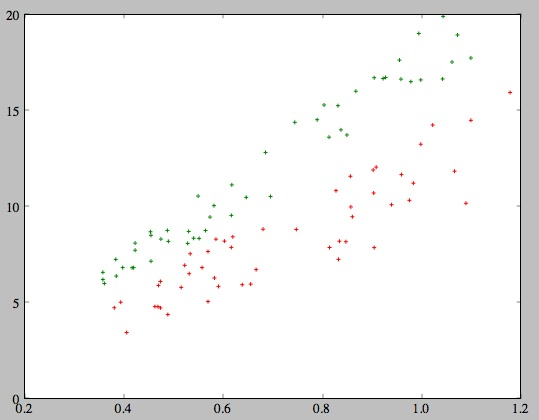
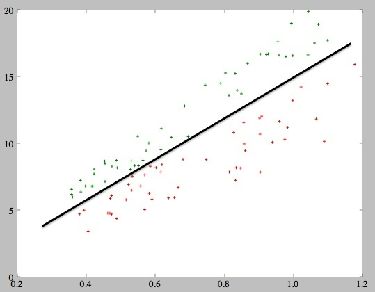
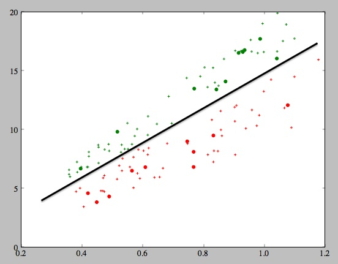
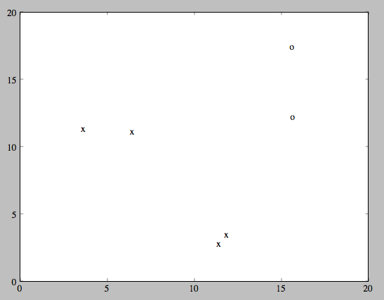
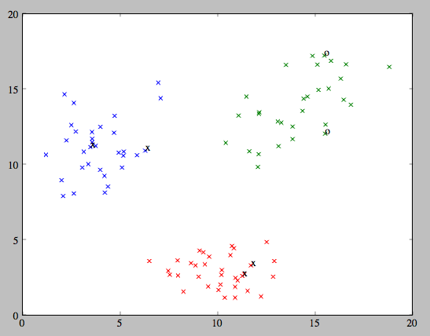

「機械学習の問題を実際に解いてみよう」
@naoya_t
2013.3.26
Zansa第15回勉強会
@naoya_t
2013.3.26
Zansa第15回勉強会


@naoya_t
2013.3.26
Zansa第15回勉強会
100個のデータ点（例えば２次元座標）に、各点に分類ラベル（例えば 0 と 1）が振ったものが与えられたとします。
この分類済みデータを訓練データとして用いることができる状況で、新たに与えられたデータ点に対し分類が行えるようにしたいです。
どうしたらよいでしょうか？
とりあえずプロットしてみる

緑のラベルの点々と赤のラベルの点々の間にスパっと直線が引けそうですよね。

未知のデータがやって来ても、この線より上にあれば緑、下にあれば赤に分類すればよさそうですね。
パーセプトロン、SVM（サポートベクタマシン）などの線形分類器は、
訓練データからこのような境界線を自動的に決定し、
それに基いて新たなデータ点の分類を行うことができます。
（Rならライブラリがあるので実装は不要）
あらかじめラベルの振られていないデータ集合が与えられました。

見た感じ何となく３つの塊（クラスタ）に分かれていますね。
３つのクラスタに分類してラベルを振りたいです。
分類したいクラスタ数が先に決まっているなら、
クラスタリングの定番K-means法（K平均法）を使ってみましょう。

各データ点にランダムにクラスタを割り振り、クラスタの重心を求め、重心に近いクラスタに再分配、を収束するまで繰り返します。
（Rならライブラリがあるので実装は不要）
ラベルの振られていない100個のデータ点が与えられたとします。（この例では３次元）

この中から、他のデータ点とは違う珍しい（あるいは異常な）性質を持った点を探すにはどうしたらよいですか？
1-class SVM (OC-SVM), Local outlier factor (LOF) 等の手法がありますが
とりあえず今日はLOFを覚えて帰って下さい。

(1) 各データ点について、その点からk番目に近い点までの
距離を求め、その距離をその点のスコアとする
(2) 異常値は近傍にデータ点が少ないのでスコアが大きい
こうして得られたスコアが基準値を超えるものを検出する手法です。
（Rならライブラリがあるので実装不要）
週末に海賊船で催されたPRML読書会に参加したN君は、船内に山のように積まれた金銀財宝に目を奪われました。
近くにあった宝箱の1つを開けてみると、きらきらと輝くコインが何枚も入っていました。
手に取ってみるとどれもずっしりと重みがあります。金貨に違いありません。
好きなだけ持って帰ってよいと言われ、勉強会帰りに何枚か鞄に詰め込んで帰ることにしました。
家に帰ってから少し冷静になったN君は「気前よく配っていたけれど、この金貨は本物なのだろうか」と疑い始めました。
鞄には20枚の金貨が入っていましたが、友人のアルキメデスに計測してもらったところ、20枚とも体積も重さも異なりました。（→Q1/CodeIQ_mycoins.txt）
ネットで検索してみたところ、金貨の体積と重さと真贋のデータを得られました。（→Q1/CodeIQ_auth.txt）
このデータを参考に、貰ってきた金貨の真贋を見分けてください。
【データ】
Q1/CodeIQ_mycoins.txt
→ 20枚のコインの計測結果（by アルキメデス）
コインの体積[cm^3], 重さ[g] 。半角スペース区切り
Q1/CodeIQ_auth.txt
→ 金貨の体積と重さと真贋のデータ。
コインの体積[cm^3], 重さ[g], 真贋（本物:1, 偽物:0）が半角スペース区切り。
【解答方法】
それぞれのコインの真贋を、1行にコイン1枚ずつ、本物なら「1」、偽物なら「0」、どちらとも言えなければ「？」と記入したファイルをアップロードしてください。
Q1/CodeIQ_auth.txt のデータをプロットしてみます。

見覚えがありますよね！
これはきれいに線形分類できそうです。

これに Q1/CodeIQ_data.txt のデータを重ねてみると…

いいですね。
コードを書いてみましょう。
SVMでkernlabパッケージを用いますので、事前に
install.packages("kernlab")
しておいて下さい。
library(kernlab)
# ファイルからデータ読み込み
auth <- read.table("Q1/CodeIQ_auth.txt")
mycoins <- read.table("Q1/CodeIQ_mycoins.txt")
# auth を教師とする分類器をSVMで
svm <- ksvm(V3 ~., data=auth)
# 手持ちのコインのデータに分類器を適用
result <- predict(svm, mycoins)
# ファイルに出力
write.table(ifelse(result > 0.5, 1, 0), "answer.txt", quote=F,
col.names=F, row.names=F)
海賊船で催されたPRML読書会は楽しかった。
機械学習の事も少しはわかった気がするし、金貨も沢山貰えた。偽金貨もずいぶん混ざっていたが。
本物とわかった金貨を何枚か貴金属店で売って小金ができた。
貴金属店の店主は海賊船での読書会の話もそこで金貨を貰った事も信じていないようだったが、
そのうち何枚かは百年前に北大西洋で沈没した豪華客船に積まれていた幻の金貨だそうで、店主もほくほくしていた。
これでカーネル多変量解析の本でも買おうかと思っていたN君に、海賊船の船長からメールが届いた。
太平洋のある島にたどり着いた。島は家から道路から何もかも金でできている。
もしかしてあの「ジパング」ですか？
しかしこの島には誰も住んでおらず、あるものといえば金ばかりで食料が全くない。
食用になりそうなのは道端に生えているキノコぐらいだ
この島のキノコは見たところ３種類あるようだ。そのうち２種類は毒キノコらしい。
誤って食べた隊員が三日三晩笑い転げたり泣き叫んだりしている。
３種類とも金色なので色では区別がつかない。
とりあえず死人は出ていないらしい。
採ってきたキノコと、隊員が食べたキノコのデータを送るから、食べても大丈夫なキノコを教えてほしい。
キノコの傘の大きさと柄の長さが記されたデータが送られてきた。
このデータをもとに採ってきたキノコをクラスタリングして、隊員が食べた毒キノコの含まれないグループのキノコを船長に教えてあげよう。
【採ってきたキノコと、隊員が食べたキノコのデータ】
Q2/CodeIQ_data.txt
→ 採ってきたキノコ（96本）
柄の長さ[cm]と傘の直径[cm]を半角スペース区切りで
Q2/CodeIQ_eaten.txt
→ 隊員が食べたキノコ（6本）
柄の長さ[cm]と傘の直径[cm]と食べた隊員の安否(o/x)を半角スペース区切りで
【解答方法】
食べていいキノコ（本数不明）のみについて、柄の長さ[cm]と傘の直径[cm]をCodeIQ_data.txtと同じ要領で、半角スペース区切りで記入してください。
（ソート順や改行コードの差異は採点側で吸収しますので心配しないでください）
Q2/CodeIQ_data.txt のデータをプロットしてみます。

またしても見覚えがありますよね！
これを３つにクラスタリングするには…？
そう、K-means法です。
Q2/CodeIQ_eaten.txt のデータもプロットしてみます。
食べて大丈夫だったキノコを o 印, 大丈夫ではなかったキノコを x 印にしています。

これを先ほどのプロットに重ねると…

安全なキノコは右上の緑のクラスタのようです。
コードを書いてみましょう。
Rには kmeans() というそのまんまの関数がビルトインであるのでこれを使いましょう。
ライブラリパッケージのインストールは必要ありません。
# ファイルからデータ読み込み
eaten <- read.table("Q2/CodeIQ_eaten.txt")
data <- read.table("Q2/CodeIQ_data.txt")
# eatenからカラム3（o/x）を除外したものとdataを縦に結合
m <- rbind(eaten[1:6, -3], data)
k <- 3
km <- kmeans(m, k)
# 3番目と6番目のキノコは隊員が食べて大丈夫だったので、
# そのキノコが属するクラスタIDを安全クラスタとします。
# ここでは6番目を使っていますが3番目でも構いません。
safe_cluster_id <- km$cluster[6]
# 安全クラスタに属するものだけを抽出します
safe_cluster <- subset(m, km$cluster == safe_cluster_id)
# 大丈夫なキノコのうち、最初の2つは隊員が食べた物なので除外
answer <- safe_cluster[-c(1,2),]
# ファイルに出力
write.table(answer, "answer.txt", quote=F, col.names=F, row.names=F, sep=" ")
食糧になるものが金色のキノコしかない黄金の島で、われわれはN君が選んでくれた安全なキノコを齧りながら探索を続けていた。
見渡す限りの黄金だけでも十分な財宝だが、この島には他のお宝は何もないのだろうか。
金色のキノコが生い茂る道をしばらく行くと
ザザザッ
風がざわめき、周囲で金色の影が動いた。
後ろから甘い香りが漂ってきた、と思ったら急激に意識が遠のいて行った。
＊ ＊ ＊
気がつくとわれわれは手足を縛られ、島民と思われる者たちに包囲されていた。
島民たちはみな屈強という風でもないが、身に纏う金色の鎧が眩しい。
あの鎧はぜひともいただいて帰りたい。
とかそんな事を呑気に考えているうちにわれわれは島民たちに担がれ、全島民が集まる集会場のような場所に連れて行かれた。
＊ ＊ ＊
島民は全部で百人ほどいるようだ。老若男女問わず金色の装束を身につけていて眩しい。
われわれの言葉がわかると思われる島民が1人、こちらにやってきて手足の縄を解きながら言った。
われわれの島には、百年に一度、海を渡って大切な客人がやって来るという
言い伝えがある。
客人の機嫌を損ねると、島が沈んでしまうと伝えられている。
それは手厚くもてなさないといけませんな・・・
しかし、毎年一度は盗賊がやってくる。
盗賊たちが言うには、珍しくもなんともない金色の物が目当てなのだそうだが。
そうか、この島にいると金は存在が当たり前過ぎて空気並みの価値しかないのか・・・
金色の物には特に価値があるわけではないから、
盗賊だとわかった奴らにはこの金色の塊を持てるだけ持たせて追い払っている。
それ金塊ですから！こんなのが流出したら金相場が暴落しますから！
ただ、客人なのだとしたら、言い伝えに従って、機嫌を損ねないように
手厚くもてなしたい。
あそこに積んであるキノコをふんだんに使った料理で。
どうだ？美味そうだろ。
傘の大きさと柄の長さを見ただけで毒キノコかどうかだいたいわかるようになってきたわれわれの目には、それは毒キノコの山にしか見えなかった。
そこで、きみたちが盗賊なのか客人なのかを調べ、適切な処遇をしたい。
調べ方はこの島の伝統に則った方法だ。
ここに100個の玉がある。
この中に1つだけ貴重な石でできた玉がある。
大切な客人ならば、それを選び出すことができるはずだ。
大きさも重さも調べたいだけ調べてもらって構わない。
単に毎年やってくる盗賊に100分の1の確率でキノコ料理を食わせているだけの話に聞こえなくもないが・・・
まあいい。状況を整理しよう。
・われわれは捕らわれの身である
・島民たちはわれわれが盗賊なのか客人なのか知りたがっている
・100個の玉の中に1つだけ入っている貴重な石でできた玉を選べば客人、他の玉を選べば盗賊とみなされる
・客人とみなされれば毒キノコ料理を食わされ、3日3晩笑い転げ泣き転げる。命を落とさないとも限らない
・盗賊とみなされれば金塊を持てるだけ持たされて島から追放される
ここは盗賊とみなしてもらって、金塊を持てるだけいただいてこの島を出るのが得策だろう。
あのキノコはもううんざりなので、確実に盗賊認定を受けたい。
ちなみに、きみたちには全部同じ大きさの金色の玉にしか見えないだろうが、
われわれは目で見て、触ってみるだけでその玉がどれなのかわかる。」
きみたちには無理だろうから、手持ちの機材で計測するなり、知人に連絡するなり
好きにしてもらって構わない。
確かに全部同じ大きさの金色の玉にしか見えない。
外見上なにかの目印があるのかと思って調べてみたのだが、どれも傷ひとつないきれいな球形をしており区別がつかない。
・・・こうなるとN君が頼りだ。
＊ ＊ ＊
というわけで、N君への今回の依頼はこれだ。
・100個の玉のうち、貴重な石でできた玉がどれなのか教えてほしい。
・判定が微妙なものがあれば、怪しい玉も含めて3つぐらい教えてほしい。
必ず盗賊認定されたいので、こちらは教えてくれた玉以外を選ぶことにする。
よろしく頼むよ。
【与えられるデータ】
Q3/hundred.txt
→ 100個の玉のデータ。
重さ[g]、比熱[J/kg・K]、光の反射率[％] の順にスペース区切り
玉はすべて半径1.0cmの球体。
【解答方法】
他の玉とは性質が違いそうな玉を３つ選んで、100個の玉のデータと同じ形式で記入したファイル「answer.txt」を作成して提出してください。
（ソート順や改行コードの差異は採点側で吸収しますので心配しないでください）
Q3/hundred.txt のデータをプロットしてみます。

見覚えがありますよね！
もしかして、LOFを使えば貴重な石で出来た玉が見つかるのでは？
RではLOFがパッケージDMwRで実装されているので、これを利用すると数行で求めることができます。事前に
install.packages("DMwR")
しておいて下さい。
library(DMwR)
# ファイルからデータ読み込み
hundred <- read.table("Q3/hundred.txt")
# LOFスコアを計算。
# ここでは k=3 としていますが、
# 本設問ではk=2〜10ぐらいの範囲なら同じ玉がトップに来るようなデータになっています。
# （k=1だと警告メッセージが出ます）
outlier.scores <- lofactor(hundred, k=3)
# スコア上位3件を抽出
outliers <- order(outlier.scores, decreasing=T)[1:3]
write.table(hundred[outliers,], "answer.txt", quote=F, col.names=F, row.names=F, sep=" ")